견종 정보
다양한 강아지 견종의 특징, 성격, 필요한 양육 환경 등을 자세히 알아보고, 여러분의 라이프스타일에 가장 적합한 반려견을 선택하는 데 도움을 드립니다.
소형견
1. 말티즈 (Maltese)
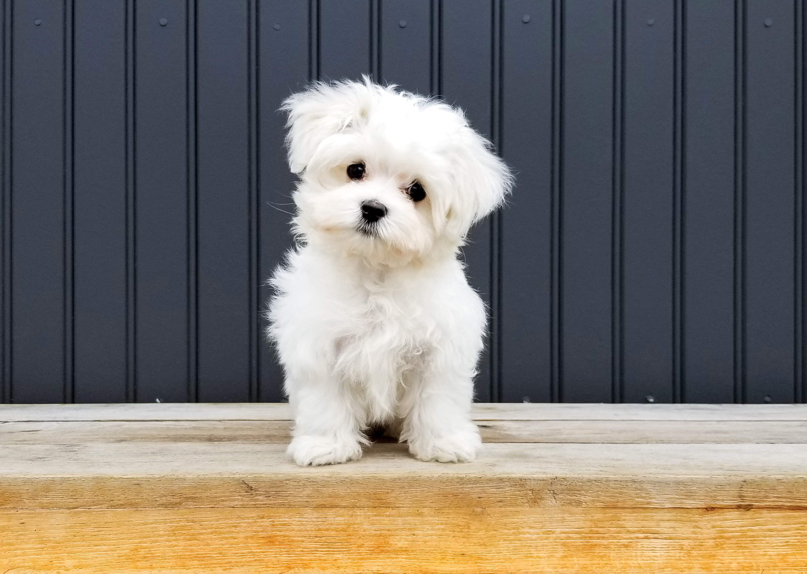특징: 작고 순백색의 긴 털이 매력적인 소형견입니다. 털 빠짐이 적어 알레르기가 있는 사람에게도 비교적 적합합니다.
성격: 온순하고 애교가 많으며, 보호자에게 강한 애착을 보입니다. 활발하고 장난기 많으며, 사회성이 좋아 다른 반려동물과도 잘 어울립니다.
적합한 환경: 실내 생활에 매우 적합하며, 운동 요구량이 낮아 아파트에서도 키우기 좋습니다. 털이 길기 때문에 매일 빗질과 꾸준한 미용 관리가 필요합니다.
2. 푸들 (Poodle)

특징: 똑똑하고 털 빠짐이 적으며, 곱슬거리는 털이 매력적입니다. 토이, 미니어처, 스탠더드 등 다양한 크기가 있습니다.
성격: 매우 영리하고 훈련 능력이 뛰어납니다. 활발하고 애교가 많으며, 사람을 잘 따릅니다. 새로운 것을 배우는 것을 좋아하며, 장난기 넘치는 성격입니다.
적합한 환경: 실내 생활에 매우 적합하며, 털 관리에 꾸준한 미용이 필요합니다. 지루함을 쉽게 느끼므로 충분한 활동과 정신적 자극이 중요합니다.
3. 포메라니안 (Pomeranian)
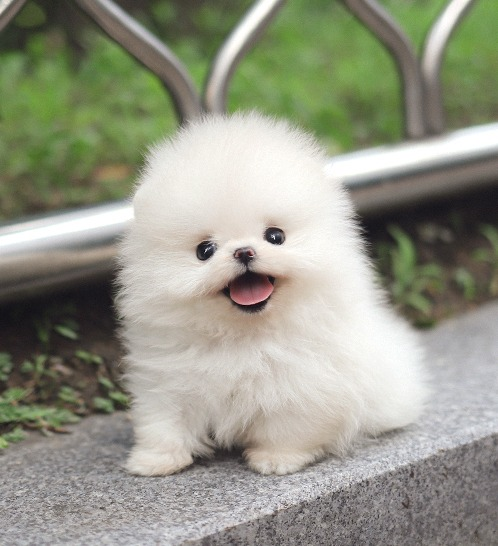특징: 작고 풍성한 이중모를 가졌으며, 여우 같은 얼굴이 특징입니다. 다양한 털 색깔이 있습니다.
성격: 활발하고 호기심이 많으며, 보호자에게 충성심이 강합니다. 때로는 고집이 세고 자기주장이 강할 수 있어, 어릴 때부터 꾸준한 훈련이 필요합니다. 낯선 사람에게는 경계심을 보이기도 합니다.
적합한 환경: 작은 체구로 아파트 등 실내 생활에 적합합니다. 털이 많이 빠지는 편이므로 정기적인 빗질과 관리가 필요합니다. 골격이 약할 수 있어 높은 곳에서 뛰어내리는 것을 주의해야 합니다.
4. 치와와 (Chihuahua)
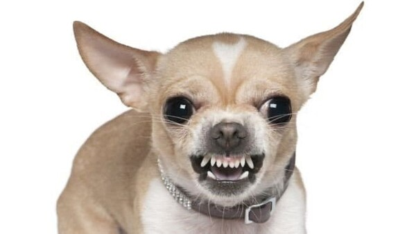특징: 세상에서 가장 작은 견종 중 하나로, 큰 귀와 눈이 특징입니다. 단모종과 장모종이 있습니다.
성격: 용감하고 충성심이 강하며, 보호자에게 매우 헌신적입니다. 작은 체구에도 불구하고 자신감이 넘치고 호기심이 많습니다. 낯선 사람이나 다른 동물에게는 경계심을 가질 수 있습니다.
적합한 환경: 실내 생활에 최적화되어 있으며, 좁은 공간에서도 잘 지냅니다. 추위에 약하므로 보온에 신경 써야 합니다. 사회화 훈련이 부족할 경우 예민해지거나 짖음이 심해질 수 있으니 주의가 필요합니다.
5. 요크셔테리어 (Yorkshire Terrier)
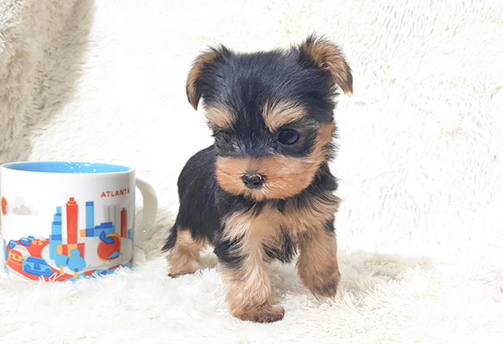특징: 작고 우아한 외모에 비단 같은 털이 특징입니다. 털 색은 검은색과 황갈색이 조화를 이룹니다.
성격: 활발하고 호기심이 많으며, 애교가 넘칩니다. 테리어 특유의 용감하고 독립적인 성향도 가지고 있습니다. 낯선 사람에게는 경계심을 보이지만, 가족에게는 깊은 애정을 표현합니다.
적합한 환경: 실내 생활에 적합하며, 운동량이 많지 않아 아파트에서도 키우기 좋습니다. 털 관리가 매우 중요하며, 매일 빗질과 꾸준한 미용이 필요합니다. 이빨 관리에 특히 신경 써야 합니다.
중형견
1. 웰시코기 (Welsh Corgi)

특징: 짧은 다리와 긴 허리, 여우 같은 얼굴이 특징인 중형견입니다. 풍성한 털과 귀여운 엉덩이로 인기가 많습니다.
성격: 매우 활발하고 장난기가 많으며, 애정이 넘칩니다. 똑똑하지만 고집이 센 편이라 훈련에 인내가 필요할 수 있습니다. 짖음이 많은 견종 중 하나이므로 짖음 훈련이 필요할 수 있습니다.
적합한 환경: 실내 생활에 적합하지만 활동량이 많아 매일 충분한 운동이 필수입니다. 관절 건강에 유의해야 하므로 높은 곳에서 뛰어내리거나 계단을 오르내리는 것을 피하는 것이 좋습니다. 털 빠짐이 심한 편입니다.
2. 시바견 (Shiba Inu)
특징: 중형견으로, 쫑긋한 귀와 말려 올라간 꼬리, 독립적인 인상이 특징입니다. 털 색은 주로 적색, 흑색, 참깨색 등이 있습니다.
성격: 독립적이고 깔끔하며, 충성심이 강합니다. 고양이와 같은 성격이라고도 불리며, 보호자와의 유대감이 깊지만 애교가 많지는 않습니다. 낯선 환경이나 사람에게는 경계심이 많습니다.
적합한 환경: 활동량이 많아 충분한 산책과 운동이 필요합니다. 털 빠짐이 심한 편이라 주기적인 빗질이 필수입니다. 어릴 때부터 사회화 훈련이 중요합니다.
3. 코카 스파니엘 (Cocker Spaniel)
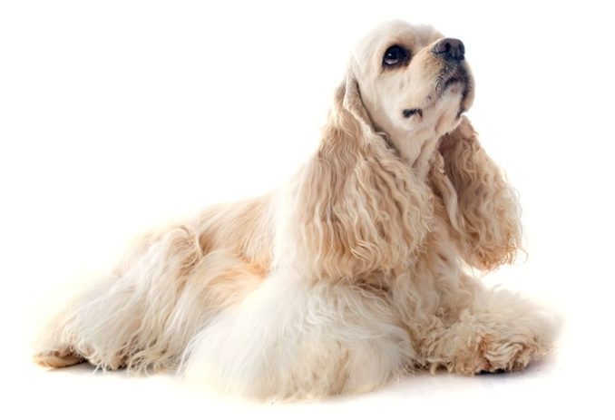특징: 길고 처진 귀와 부드러운 털, 매력적인 눈이 특징입니다. 아메리칸 코카 스파니엘과 잉글리시 코카 스파니엘이 있습니다.
성격: 활발하고 쾌활하며, 애정이 넘칩니다. 사람을 매우 좋아하고, 아이들과도 잘 지냅니다. 영리하고 훈련에 잘 따르지만, 활동량이 많아 충분한 운동과 놀이가 필요합니다.
적합한 환경: 실내 생활에 적합하지만 매일 충분한 산책과 활동이 중요합니다. 귀가 길기 때문에 귀 질환에 취약하므로 정기적인 관리가 필요합니다. 털이 잘 엉키므로 꾸준한 빗질과 미용이 필수입니다.
4. 진돗개 (Jindo Dog)
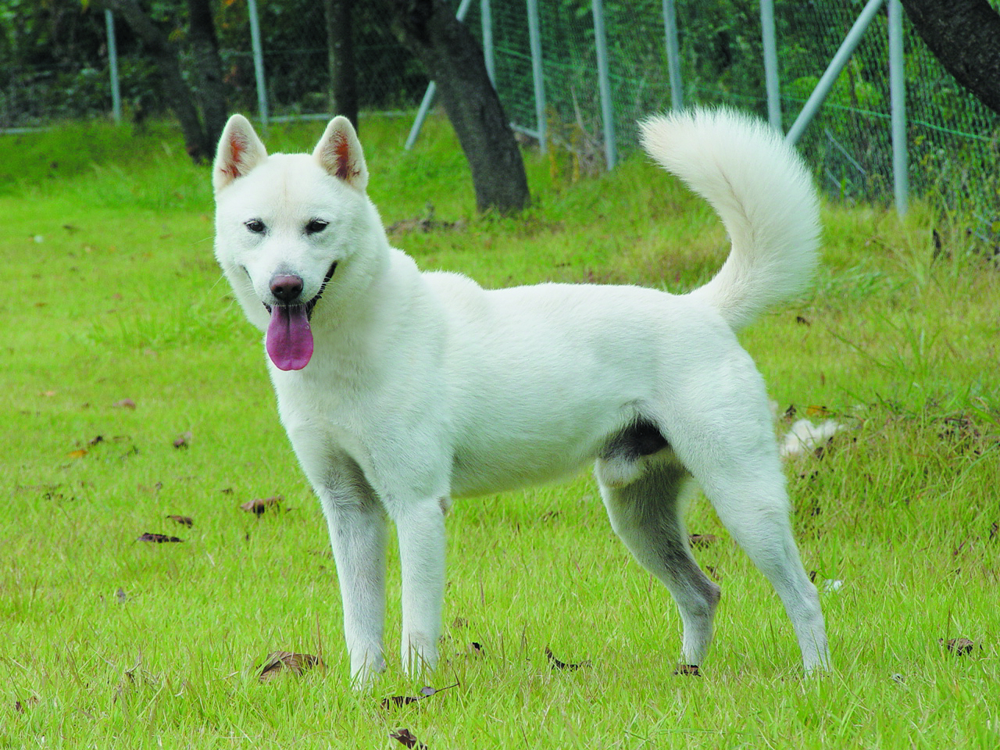특징: 한국의 대표적인 토종견으로, 탄탄한 체격과 쫑긋한 귀, 말려 올라간 꼬리가 특징입니다. 용맹하고 충성심이 강합니다.
성격: 보호자에게 매우 충성스럽고, 영리하며 독립적입니다. 경계심이 강하여 낯선 사람이나 환경에 쉽게 경계심을 가질 수 있습니다. 깔끔한 성격을 가지고 있습니다.
적합한 환경: 활동량이 많으므로 넓은 마당이 있는 집이나 충분한 산책 공간이 필요합니다. 털 빠짐이 심한 편이라 주기적인 털 관리가 필요합니다. 어릴 때부터 사회화 훈련과 일관된 훈련이 매우 중요합니다.
5. 불독 (Bulldog)
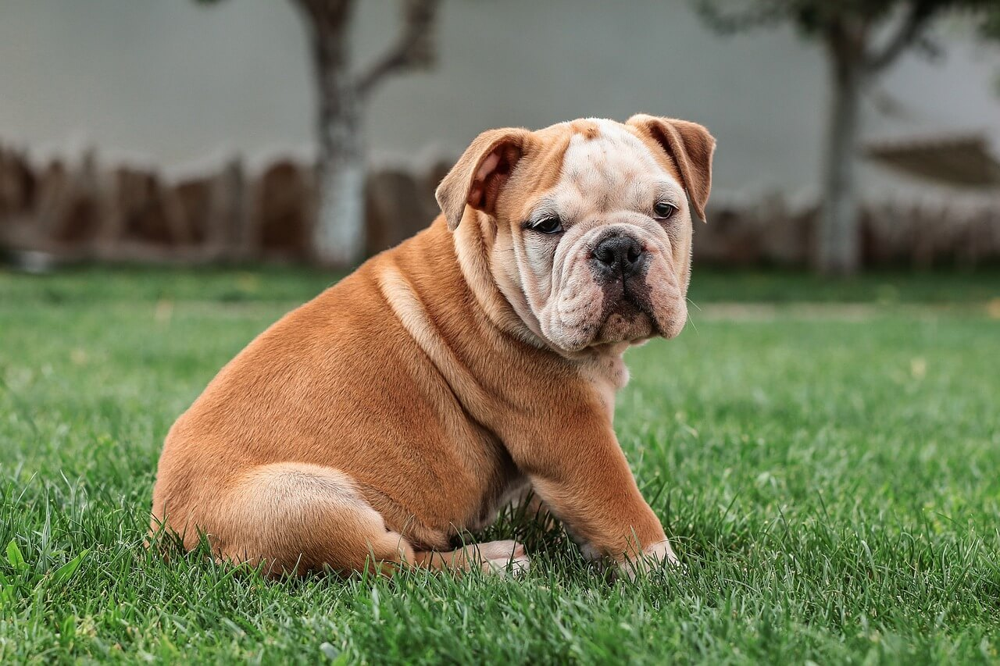특징: 단단하고 근육질의 몸매, 주름진 얼굴, 짧은 코가 특징입니다. 느긋하고 인상적인 외모를 가졌습니다.
성격: 겉모습과는 달리 매우 온순하고 인내심이 강합니다. 아이들이 있는 가정에 적합하며, 사람을 매우 좋아하고 애교가 많습니다. 고집이 센 편이라 훈련 시 인내가 필요합니다.
적합한 환경: 실내 생활에 적합하며, 격렬한 운동보다는 짧고 규칙적인 산책이 좋습니다. 더위에 매우 취약하므로 여름철에는 특히 주의해야 합니다. 피부 주름 관리와 호흡기 질환에 신경 써야 합니다.
대형견
1. 골든 리트리버 (Golden Retriever)
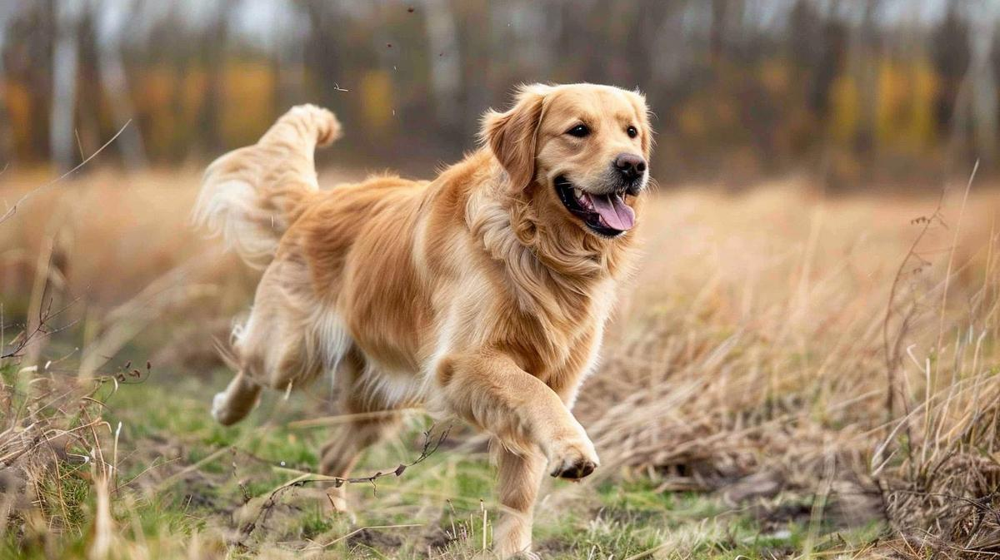특징: 크고 아름다운 황금색 털을 가진 대형견입니다. 온순하고 인내심이 강하며, 친화력이 뛰어납니다.
성격: 매우 온순하고 참을성이 많아 아이들이 있는 가정이나 처음 강아지를 키우는 사람에게도 적합합니다. 똑똑하고 훈련에 잘 따르며, 사람을 매우 좋아합니다. '천사견'이라는 별명이 있을 정도로 순하고 다정합니다.
적합한 환경: 활동량이 매우 많으므로 넓은 공간과 충분한 운동 시간이 필요합니다. 매일 긴 산책과 놀이를 통해 에너지를 발산시켜야 합니다. 털 빠짐이 많은 편이라 정기적인 빗질이 필요합니다.
2. 래브라도 리트리버 (Labrador Retriever)
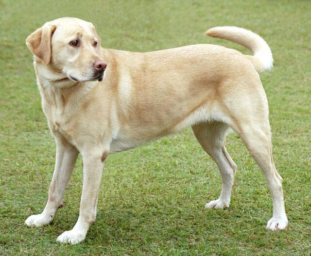특징: 단단한 체구와 짧고 촘촘한 털을 가진 대형견입니다. 검은색, 황색, 초콜릿색 등 다양한 털 색이 있습니다.
성격: 매우 온순하고 사교적이며, 친화력이 뛰어납니다. 아이들이나 다른 동물들과도 잘 지내며, 똑똑하고 훈련에 잘 따릅니다. 활동량이 많고 에너지가 넘치지만, 인내심이 강하고 사람을 기쁘게 하려는 욕구가 강합니다.
적합한 환경: 활동량이 매우 많으므로 충분한 운동과 넓은 공간이 필요합니다. 수영을 좋아하며, 에너지를 발산할 수 있는 활동을 꾸준히 해줘야 합니다. 털 빠짐이 있는 편이라 주기적인 빗질이 필요합니다.
3. 저먼 셰퍼드 (German Shepherd)
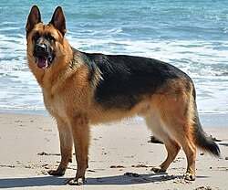특징: 균형 잡힌 몸매와 강인한 인상, 뾰족한 귀가 특징입니다. 경찰견, 군견, 안내견 등 다양한 분야에서 활동합니다.
성격: 매우 영리하고 충성심이 강하며, 용감합니다. 보호자에 대한 애착이 강하고, 훈련에 탁월한 능력을 보입니다. 경계심이 강하고 낯선 사람에게는 쉽게 다가가지 않지만, 가족에게는 헌신적입니다.
적합한 환경: 활동량이 매우 많고 지적 자극이 필요하므로 충분한 운동과 훈련, 놀이가 필수입니다. 넓은 공간에서 키우는 것이 좋으며, 꾸준한 사회화 훈련이 필요합니다. 털 빠짐이 있는 편이라 주기적인 빗질이 필요합니다.
4. 시베리안 허스키 (Siberian Husky)
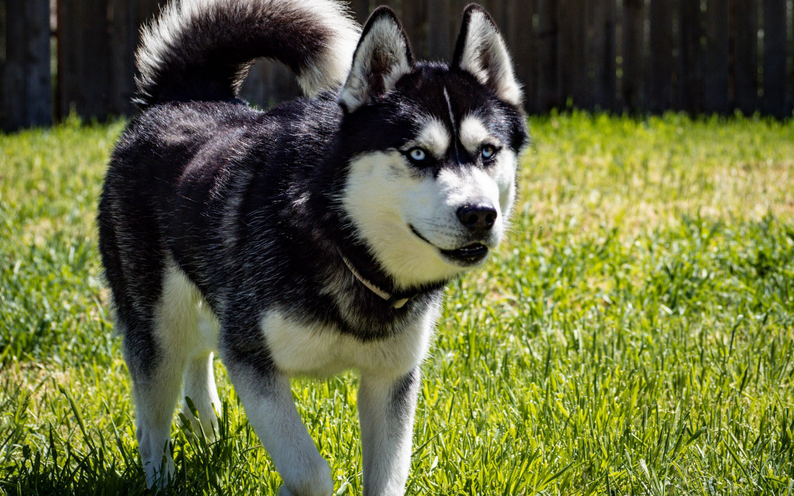특징: 늑대를 닮은 외모와 날카로운 눈빛, 풍성한 이중모, 꼬리를 위로 말아 올리는 특징이 있습니다. 파란 눈이나 오드아이가 많습니다.
성격: 독립적이고 영리하며, 활발합니다. 무리 생활을 좋아하며, 사람에게 친화적이지만 때로는 고집을 부리기도 합니다. 에너지가 넘치고 장난기가 많습니다.
적합한 환경: 엄청난 활동량이 필요하므로 넓은 공간과 매일 긴 산책, 운동이 필수입니다. 추위에 강하지만 더위에 매우 취약하므로 시원한 환경을 제공해야 합니다. 털 빠짐이 심하고 털 관리가 꾸준히 필요합니다.
5. 도베르만 (Doberman Pinscher)
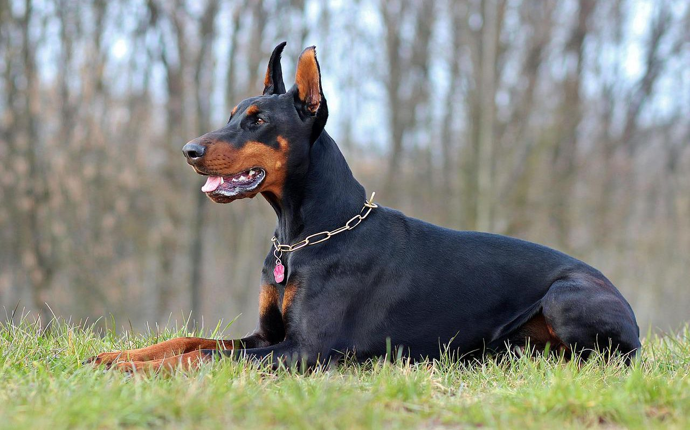특징: 검고 윤기 나는 짧은 털과 근육질의 날렵한 몸매가 특징입니다. 훈련을 통해 경비견, 경찰견 등으로 활약합니다.
성격: 영리하고 용감하며, 충성심이 강합니다. 보호자에 대한 애착이 깊고, 가족을 보호하려는 본능이 강합니다. 훈련에 대한 흡수력이 빠르지만, 올바른 훈련과 사회화가 필수적입니다.
적합한 환경: 활동량이 많으므로 충분한 운동과 지적 자극이 필요합니다. 추위에 약하므로 실내에서 키우는 것이 좋습니다. 강력한 리더십과 일관된 훈련을 제공할 수 있는 보호자에게 적합합니다.
댓글
궁금한 점이나 추가하고 싶은 정보가 있다면 의견을 남겨주세요!